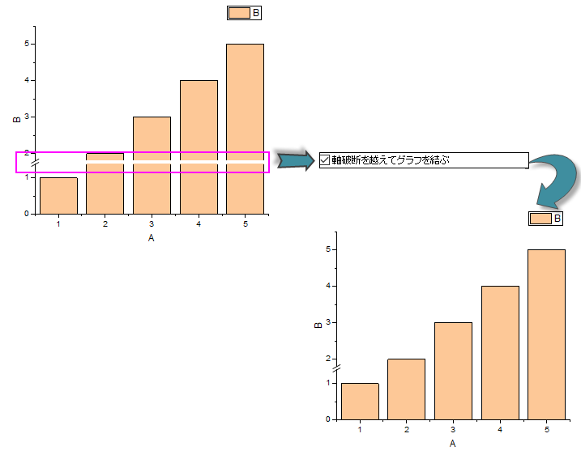
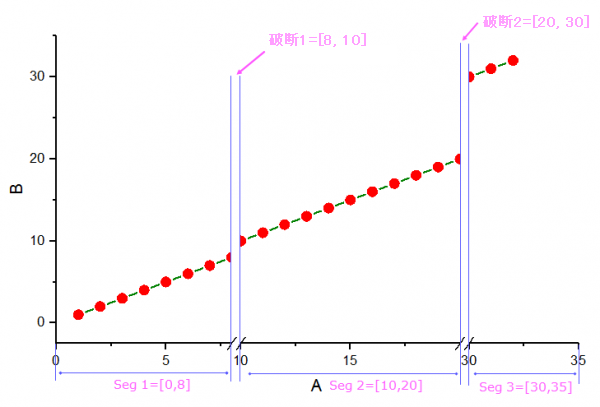

レイヤの色を設定する「作図の詳細ーページ属性」の表示指定タブ で、ページの色を設定したり、軸破断を超えてグラフを結ぶ かつ/または欠損値を超えてグラフを結ぶ、棒の幅について欠損値を無視する、マスター項目を使うなどが可能です。
以下の諧調塗り色コントロールを使ってページの色を指定できます。
ページ色を表示しないには：
なしを選択してページをクリップボードにエクスポート・コピーすると、ページは透明になります。(貼り付け先の背景が表示されます。)
ページに単一色を表示するには：
ページ背景色を透過させるには：
現在のグラフページ色をグラデーションカラーにします。
ページに諧調色を追加するには
諧調色を透過させるには：
諧調塗り色についての詳細は、こちらをご覧ください。
折れ線または線+ シンボルデータ
線 + シンボルグラフでは、破断の領域を跨ぐ線は破線として表示されます。
縦棒/横棒グラフの場合、Y軸に任意の破断を追加すると、デフォルトでは、この破断で縦棒/横棒が分割されます。このチェックボックスにチェックを入れると、縦棒/横棒を接続して、破断なしで表示できます。

軸破断がないように、軸破断の前後で線の勾配（実線勾配）を保持
以下はこのオプションを使うとどうなるかを示した例です。
軸破断があって、このチェックボックスにチェックがついていない場合、軸破断のどちらかの端で勾配が反映されません。以下は、実際の勾配を保持せずにどのように線が接続されているのかを示すサンプルです。
Origin 2018から、軸ダイアログの軸破断タブにある自動位置ボックスにチェックを入れておくと、 平軸破断の軸セグメントを比例した形で表示することが可能です。
以下の図は、比例単位を使用して自動的に軸破断位置を決定する方法を示しています。

Total Length = Axis Length - Length of Break 1 - Length of Break 2
または、
Total Length = Axis Length - Length of Break 2 - Length of Break 3
Seg 1、Seg 2およびSeg 3は、長さの比率に応じて8：10：5（つまり(8-0):(20-10):(35-30)）の長さに応じて再スケーリングされます。
線と線 + シンボルデータプロットで、欠損部分を線で繋ぐには：
縦棒および横棒グラフで棒の幅を計算するときに欠損データを無視するには、
データが欠落しているデータが多く、棒が非常に細くなる場合に特に便利です。Note: このオプションは、棒の幅を算出するときにのみ欠損値を無視します。棒グラフから欠損値を排除するものではありません。
3D棒グラフについてはＮｏｔｅを参照してください。
Originのマスター項目では、プロパティとグラフウィンドウの見出しの標準設定を一括で設定できます。 プロジェクト内の指定したグラフやレイアウトに、カスタム背景、会社ロゴやラベルを適用するときに便利です。 マスター項目を作成して、これらをグラフエクスポート、クリップボード、印刷に適用するチェックボックスを使います。
それぞれのグラフページにマスター項目があります。
グラフおよびレイアウトページでのマスター項目の作成と追加の詳細については、グラフのマスターページレイアウトの作成を参照してください。
ドロップダウンリストでワークシートやグラフの数字の区切りを変更できます。
デフォルトのWindowsの設定では、小数点記号ドロップダウンリストは、環境設定：オプションダイアログの数値の表現形式タブの小数点記号の設定に従います。グラフページで別の区切りを適用したい場合は、他の設定方法もあります。